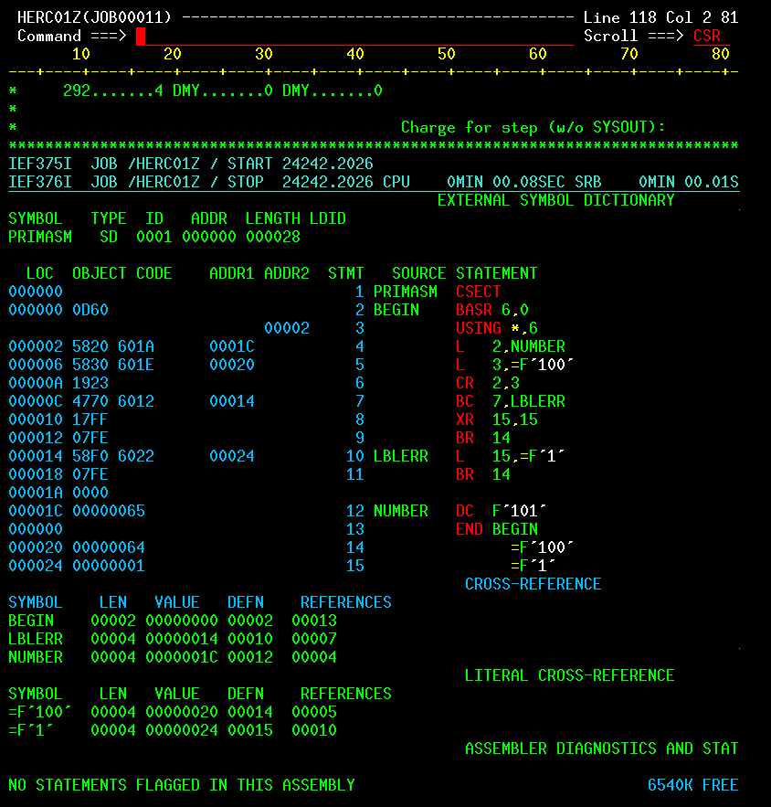

Getting started with Assembler
Your first assembler program (with bells and whistles)
It won't be a useful program, but it will be our first program.
The program tests whether numbers '101' and '100' are equal.
- If they are not equal, the program will exit with a non-zero return code (or in MVS parlance it will "abnormally terminate")
- If they are equal, the program will exit gracefully
Here's the program in all it's glory:
I lied. There's actually more happening there than just comparing two numbers. Everything in between BEGIN and END is assembler, but the rest is JCL which stands for Job Control Language. The source code above actually describes a job that contains our program (in assembler).
The job compiles and links assembler code creating an executable and then proceeds to run it. We'll soon look into what everything is, but as you're anxious to try this, here's what you need to do:
- Allocate a new dataset with utilities/dataset (for easy access use command `=3.2`). I used a FB (Fixed Blocked) record format.
- Copy the source into the dataset using edit mode (`=2`)
- Type `sub`/`submit` command
- Look at the job output under utilities/job output (`=3.8`)
On to the good stuff
Ok. Let's dive into the source code starting with the assembler (the interesting stuff first!).
The first line says BEGIN BASR 6,0 which immediately throws us in the deep end of the pool. BEGIN is a label and can be whatever, but BASR is something else.
BASR is a machine instruction and comes from Branch And Save Register. While it can (and apparently is) used for branching in programs, here it is used to establish a base register. Details of why BASR works the way it does are a bit out of our scope, but what it does here is that it places the address of the next instruction into register 6. In the context of our program, this means that register 6 is our base register and now holds the base address of the program. Basically it's the address of the first instruction of the program during execution.
To understand the next instruction USING BEGIN,0 we need to understand about base-displacement addressing which is one of three addressing modes. When using base-displacement addressing, the effective address of an instruction or data in memory is calculated by adding the the base address and the displacement together. The base address is what is stored inside the base register and the displacement is the offset of an instruction from it's base address. So what "USING BEGIN,0" does is that it tells the assembler that, during execution, the base register will hold the address of the instruction labeled "BEGIN".
To make matters easier, we can look at the output of the assembler. we see that it was calculated the offsets from BEGIN into to the column. For example, the offset of the instruction CR 2,3 is 00000A which is 10 in decimal numbers. This means that the instruction is ten bytes off from BEGIN. Armed with this info the program can execute correctly regardless of it's exact location in memory after loading. It just needs to calculate the effective address of the instructions.
"Business logic": Comparing integers and branching
Now that addressing gibberish is behind us, let's keep on diggin'. The next instruction is easy-peasy compared to the previous: L 2,NUMBER simply states that we should load a full-word from the address denoted by label "NUMBER" into register 2. In the mainframe world a fullword is 4 bytes or 32 bits. A half-word is 16 bits and a double word is 64 bits (note that it is not a double fullword).
This is also easy: CR 2,3 says "compare the value of registers 2 and 3". CR comes from "Compare Registers". The result of the comparison is placed into what is called a condition code. The condition code is a 4-bit part of the Program Status Word (PSW) which is an internal register.
To interpret the condition code, new terms are needed. In CR 2,3 "CR" is an operation code (typically shortened to opcode) and 2 and 3 and the first and second operand.
Given that we've issued a comparison between registers, we can now use the condition code in the PSW which is what BC 8,LBLERR does. BC is basically an if-statement: if the value of the condidition code is "something", go to the address defined by the label "LBLERR". We define something by giving a 4-bit mask as the first operand - here it is the number 8 or 1000 as bits. The bit mask represents the value "EQUAL" in the condition code.
Together CR 2,3 and BC 8,LBLERR mean that: "if the value of register 2 and 3 are equal, fetch instruction from whatever address label LBLERR denotes"
XR 15,15 is neat trick: it's xor of register 15 with itself effictively making it zero. Now, register fifteen holds a special purpose: it contains the return code of the program. So this set us up for returning zero as the return code.
Next up is BR 14. BR stands for Branch Register. In this case we jump to the memory address stored in register 14. Register 14 is a special register: it contains the memory address of the caller. So we're exiting the program here. Note the location of this instruction - it is never reached if we jump to LBLERR in the previous instruction. Together with the previous instruction this is instrumental to the program's logic.
Next up is LBLERR L 15,1. We've seen this before. We will load the value 1 into register 15. In this situation we want exit on a non-zero status (because 100 is not equal to 101) so we set the value to 1 before returning to the caller using BR 14. LBLERR is just a label and can be whatever.
With NUMBER DC F'101' we define a fullword constant with the value 100 and assign the label NUMBER to it (you've seen it used before).
And that's all folks. You and I now share a superficial understanding of some assembler instructions. I'll leave it to you to think what to do with this information.